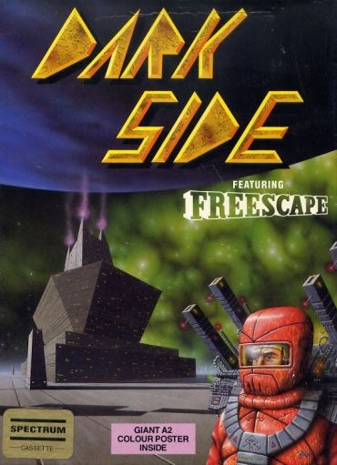
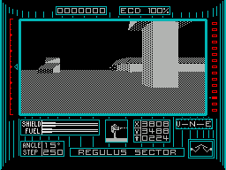
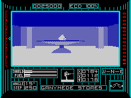
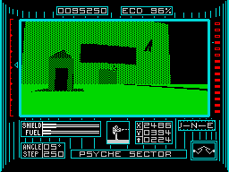

Dark Side


{kind=link}

| Publisher: | Incentive |
| Price: | £9.95 cassette, 14.95 disk |
| Year: | 1988 |
| Source: | CRASH, Issue 54 |

The revolutionary 3-D graphics technique, Freescape, made its debut late last year in Driller, where an emergency mining operation was carried out in order to save Evath’s distant moon, Mitral, from a Ketar-engineered explosion.
It’s taken the Ketars 200 years to plan their revenge. This time they’ve constructed a giant crystal weapon, known as Zephyr One, on Evath’s other moon, Tricuspid. Intended to harness the sun’s energy and direct it at Evath, the huge crystal is linked to a network of energy collection devices (EGOs). If the EGOs are allowed to reach maximum power, Zephyr One fires and, with no chance to retaliate, your planet explodes.

The mission — to shoot and disable the EGOs — is highly confidential. You are dropped inconspicuously into a safe zone on the moon’s surface with the minimum of equipment: space suit, jet-pack, quad lazers, a shield and a small supply of fuel.
Tricuspid has 18 sectors including the dark and light sides of the moon. In each, the 3-D landscape is observed through the viewing panel of the space suit. Buildings, trees, walls and walkways stand out from the regular surface of the moon. You can look up or down, rotate to view objects from any angle and tilt to the right or left.
Tricuspid is a moon of many secrets: strange symbols mark its buildings, tunnels are hidden beneath the ground and a range of places can only be accessed by deciphering a series of puzzles. The EGO network itself needs to be tackled strategically; a column linked to two other active EGOs regenerates immediately when it is shot, so only ECDs with a single working connection can be disabled permanently.

Powerporters (suspended slabs) provide instant teleportation. Restricted areas can only be accessed via a telepod, but for security purposes, essential telepod crystals have been hidden in various places around the moon.
Ketar defences click into action as you approach. Detector devices teleport intruders into prison while plexors break down your shields as soon as you come within range. However, dwindling power supplies can be boosted by walking into fuel rods or shield pentagons.
Allow your energy to run down, fall into the grip of the plexors or fail to complete the task in time, and Evath’s fate is sealed. Persevere long enough to reach the final EGO on the moon’s dark side, though, and your distant homeland might just survive...
CRITICISM

mysterious symbols
“The impossible has been done! Incentive have taken the best game of 1987, improved on it, and made it one of the best games of 1988! There was no doubting the excellence of Freescape — the graphics generation technique used in Driller — but some criticised the lack of game content. This criticism could in no way be levelled at Dark Side; it’s not just a fast action game (albeit only 5% faster than its predecessor) requiring accuracy and coordination but also a very strong strategy game — cartographers will love it! My favourite feature of Dark Side is the way you can enter a screen, turn on your jet-pack and zoom up to a great height, then look down on the screen you’re about to encounter and plan your strategy. This and Cybernoid must reign among the best games of the year so far. When Dark Side came in for review I played it solid for almost a day, and I can’t say that about many games nowadays!”
PAUL ... 95%
“Following the considerable success of Driller, the Freescape technique has once again been used to incredible effect in Dark Side (hopefully, though Incentive’s next enterprise will use Freescape in a different fashion; it’s such a brilliant system, I would hate for each successive game to become ‘just another Driller variant’). Dark Side is an extremely captivating game, and after playing for only a short while it’s possible to become totally absorbed in the proceedings. For the player, the world of Tricuspid really exists: movement within the alien environment is smooth and utterly believable, and the mission is all the more absorbing because of it. The urge to explore is incredibly strong. In fact, this high level of addiction proves to be the game’s greatest drawback: cracking it won’t take long, simply because you cannot drag yourself away! The useful save game feature is also a major conspirator to the game’s short life-span. Either way, the experience is well worth the cost. If you want to lose yourself for a couple of days, see the light: buy Dark Side.”
STEVE ... 96%
“Dark Side is one of the best presents you could give yourself if you’ve just finished your exams. But don’t buy it before — you won’t get any revision done! The depth and complexity of the Freescape environment is bound to keep you glued to your screen. Hardly anything is as straightforward as it looks; there’s always the chance of discovering a hidden tunnel or an unknown passageway. The 3-D gives you a strong sense of really ‘being there’: you can wander around, exploring buildings, searching passageways and fathoming the use of unknown objects to your heart’s content. You alone determine the exact route around the vast and hostile moon. The numerous puzzles draw on the best elements of strategy, arcade action and adventure and can get quite tough but there’s nothing like the pleasure of solving a problem that’s had you stumped for several hours. If you’ve played Driller you won’t be able to resist. If you haven’t, rush out and make up for what you’ve missed.”
KATI ... 94%
COMMENTS
| Joysticks: | Cursor, Kempston, Sinclair |
| Graphics: | Super techniques and pixel accurate drawings make Freescape the leading graphics generation system currently being used |
| Sound: | Atmospheric spot effects, but no tunes |
| Options: | Load/Save game |
| General rating: | A game of Driller’s high calibre which creates its own complex environment and distinctive atmosphere — a game of the future |
| Presentation: | 90% |
| Graphics: | 96% |
| Playability: | 95% |
| Addictive qualities: | 93% |
| Overall: | 95% |